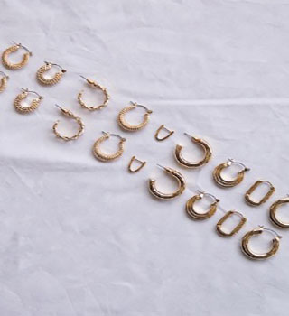
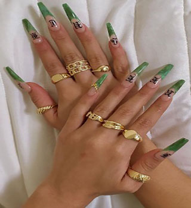
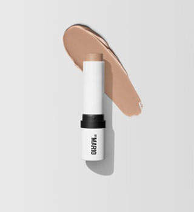
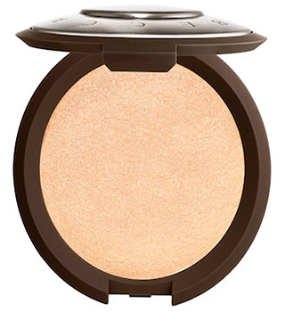
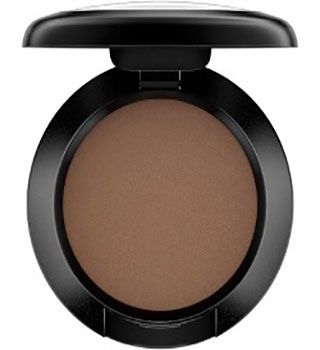
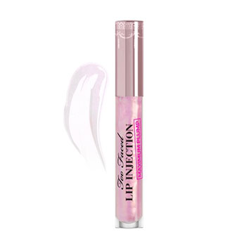

My favorite gold necklaces are chain necklaces, or link necklaces. These necklaces are thin, and easy to layer and dress up any type of outfit.

My favorite earrings are gold hoop earrings. Gold hoops are great to wear stacked if you have multiple piercings and are nice because they aren't too big but also aren't too small that you can't see them.

Stackle rings are my favorite types of rings to wear. I enjoy being able to mix and match them and style them in different ways.

My favorite makeup trend I’ve learned throughout the years is contouring. My favorite way of contouring
is using my Makeup By Mario, or Glossier contour stick. Contouring really helps bring out different features
on your face such as your jawline, cheek bones and nose.

Highlighting your cheek bones and putting it on the inner corner of your eyelids really makes your eyes
stand out and creates a glowing look to your skin. My personal favorite highlighter that I’ve been using for
years has been the Becca highlighter

Winged eyeliner was very popular in the early 2000s and has made a comeback but in a very subtle way. I
personally like using brown eyeshadow to make a very faint wing.

Lip plumper has been my go to lip accessory for the past 2 years. My favorite lip plumper’s are the Dior
lip glow oil, and the Too Faced lip injection lip plumper.